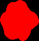
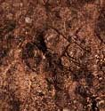
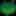
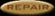
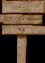
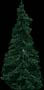

9.0 Level making
New editor workflow: The native tools use a
.toulevel.json project file. You do not edit the JSON
by hand: the command-line tool creates it, and the editor changes
it together with the attribute image. The JSON is source data;
the exported .lev is what the game loads. Launching
tou-level-editor without arguments presents Open,
New Normal, and New GG choices. Open accepts either an editable
JSON project or an existing compiled .lev. Importing a
level extracts its embedded JPEG payloads and reconstructs the
attribute TGA beside a new JSON project. The commands below remain
useful for scripts and exact custom dimensions.
Important note:
9.1 Making normal levelsNative editor: new normal level
makelev\bin\tou-level-compiler.exe new projects\my-level\my-level.toulevel.json projects\my-level\my-level.jpg [projects\my-level\my-level-parallax.jpg]
The visible JPEG and attribute map must have identical dimensions. Keep the project JSON, JPEG, attribute TGA, and optional parallax together as the editable source for the level. The editor starts with a 9-pixel terrain brush so dragging is immediately visible. The bottom strip shows the current size and mouse controls for each tab. Use Brush - or [ to reduce it as far as the exact 1-pixel brush needed for detail work; right-click picks an existing attribute, middle-drag pans, and the mouse wheel zooms. Legacy source filesThe Jungle fixture remains a useful example of the old workflow:
The legacy workflow was:
More info on attribute map:This "attribute map" tells the game where are repair places, burning material, explosive material, water and so on. To see what an attribute map looks like, take a look at the jungle.tga. I think you'll get a pretty good picture about attribute maps then. Open colors.png from makelev-directory, to know which attribute map colors correspond to which land types. Just use the color picker-tool and select the attribute map colors from colors.png. Some of the colors are better explained here:
Note: You can make only single-coloured water! This is because of the running water and waves, that would look ugly if the water had colors. To define the water color, fill up the config-file. Also note: Make sure you use sharp brush when drawing and not smooth brush. Examples below:
Turrets, mines, gates, and other objectsUse the editor's Objects tab. Each marker is one point in the attribute map; select a type, click to add it, drag to move it, and edit its properties below the list. Do not draw a line of markers unless you genuinely want hundreds of overlapping objects. Gates do not have a free-standing sprite that you place in the artwork. The marker is an anchor. At runtime TOU creates a moving wall at that coordinate and renders gate graphics 58/59 over it. Style selects the wall behavior, Facing controls its orientation, Team owns it, and Graphics selects the normal/mirrored gate artwork. Linked pair creates a second, opposite-facing segment one pixel beside the first and links their motion. Leave enough clear space around the anchor for the wall to move. The editor shows graphics 58/59 at that coordinate and keeps the labeled anchor and movement axis visible while it is selected; none of this artwork needs to be painted into the JPEG. The turret preview follows its Style, Team, and Direction properties using the same seven sprite families and team-color transformation as the runtime. Turrets are previewed in both the object selector and at their placed map coordinates. More info on parallax background:Parallax can be any size if it's smaller or equally sized with the actual level. I mean, both width and height must be smaller or equal, not just the total area. More info on level's config file:The config file has some questions about the level. Just answer them, the config-file is quite well documented. Legacy conversionThe historical converter accepted the old JPG/TGA/TXT set. New
projects should use the native editor's Export button or
Maximum level size: Both width and height must be less than 8000 pixels. By the way, a 8000x8000 map would take 196 megabytes of memory! Info on memory usage:I strongly suggest keeping your level's width less than 2034 pixels! The heigh can be whatever you want. 9.2 Making GG levelsFirst choose what you are creating
Native editor: new custom GG levelCreate a project with a size and an existing theme directory name: makelev\bin\tou-level-compiler.exe new-gg projects\my-gg\my-gg.toulevel.json 1280 720 "the earth" Open the JSON in the editor. Paint the constraint/attribute map in Terrain, change the theme, shape, densities, and seed in GG, then Save and Export. Add sign records in the GG list and paint GG sign location where each sign may appear. The canvas is the editable behavior/constraint map. Click Preview (or press P) to overlay terrain generated by the actual game runtime. A fixed seed reproduces the same layout; zero asks the runtime for a tick-derived seed. If you choose to make a GG level, you don't have to draw the graphics for your level. Only the attribute map and config file are used in GG levels. Draw the attribute map normally and then fill up the config file. At the bottom of the config file, there is a GG-section. Of course, answer "yes" to the question "is your level a GG level?". Then answer all the questions there and that's it. Note that you can't have your own parallax background in a GG level. But you can place repair places and signs in GG levels. It's a bit tricky to explain but I'll try. To make a repair place in GG level, draw the repair in attribute map (some abitarily sized blob of repair-color). Then edit config-file and find a place where it says "Let GG handle the repair placing?". Answer 0 there. Ok, that was simple after all! To make a custom sign in GG level, choose the most bottom color from colors.tga. Then draw the sign place in attribute map. Then edit config-file and find a place where it says "Put name signs in the level also?". Answer 0 there. Then look the next question in config-file if you want to write your own texts in signs (otherwise the texts will be randomly generated). Phew, that's about it. I hope you could follow :) 9.3 Making themes for GGNative theme workflow
All the tgas you draw here must be 24-bit tgas without compression! And all the jpegs must have the extension "jpg". Make a new directory under ggstuff. It will be your theme's name. Every GG theme needs an info file. It's called info.txt. Copy it from other GG theme's directory. Then edit it with notepad and answer all the questions there. Then to the pictures. Look at the pictures in other GG themes. They will tell you much of how it's done. You only have to draw two pictures to get your GG theme working: s1.tga and t1.jpg. S1.tga tells the shape of the filler (usually quite round and small) and t1.jpg is the theme's texture. After you have drawn those, go test your new GG theme! :)  1. ShapesName these as s1.tga, s2.tga, s3.tga and so on. These will fill the level. If you have more than one of these, the generator uses them randomly. Black color does not fill, any other color will.  2. TexturesYou can only have one texture. Name it t1.jpg.  3. Lawn (optional)Lawn looks cool but it's optional. If you want grass, name it l1.tga. You can also have l2.tga and l3.tga and so on, and the game will use them randomly. But who bothers to have more than one lawn bitmap? :)  4. Repair (optional)You don't have to draw repairs, but then your theme doesn't have any repair places. Name this d1.tga. If you want lots different looking repairs, name them d2.tga, d3.tga and so on.  5. Sign (optional)Name: x1.tga. If you want many different looking signs in one level, name them x2.tga, x3.tga and so on.  6. Additional pictures (optional)Name: p1.tga, p2.tga, p3.tga and so on. Have lots of these. 7. Extra shapes (optional)These will fill the bottom of the ground blocks. Name: sd1.tga, sd2.tga and so on. 8. Parallax background (optional)This is a texture also. Save it as px1.jpg. If you don't have your own parallax, the GG will use your normal texture as parallax, scale it to half the size and darken it a bit. 9. Extra textures (optional)Look at "Rocky mountains"-theme. t2.tga tells what shaped the rocks are. Use unique color for every rock you draw. t3.tga (optional, even if you have t2.tga) tells where are the trashes, that shouldn't be in the texture's 'borders' (real fine tuning, you probably don't want to bother! I did though). 10. Explosive texture (optional)In some GG levels there can be explosive land. Explosive land is textured as normal ground if you don't have this texture. Name: ex1.jpg |